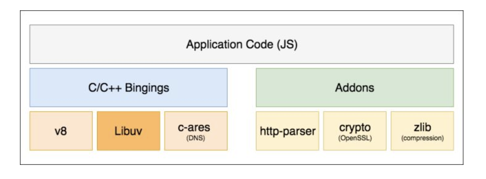
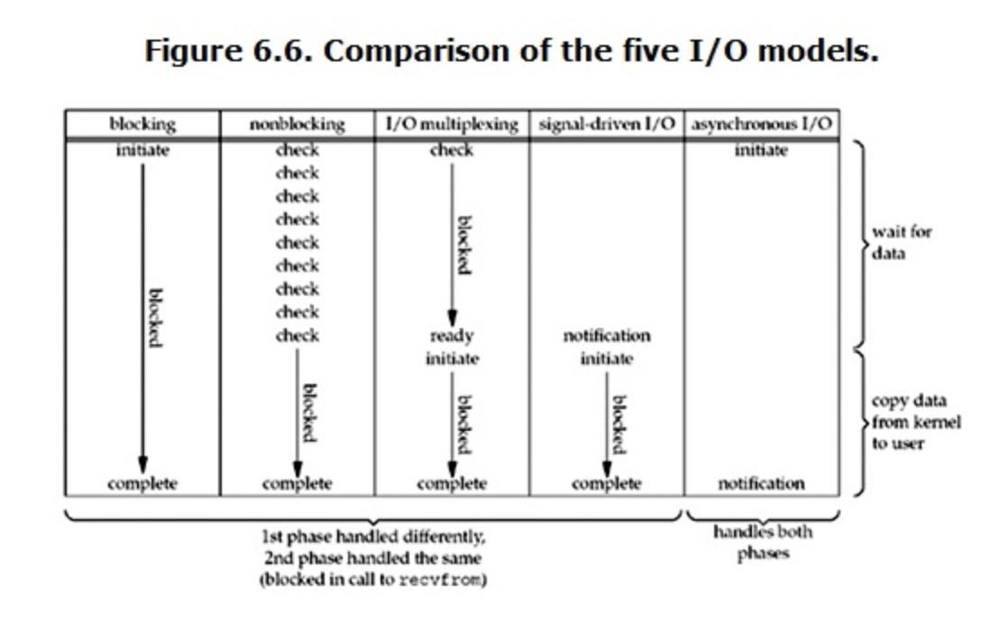

理解nodejs高I/O密集型计算
在学习nodejs之前，总是听到一句话“擅长I/O密集型计算、不擅长CPU密集型计算”，但是为什么会这么说呢？
一、先了解nodejs的几个概念
首先需要理解几个概念再谈其他。
- Nodejs 是一个基于 Chrome V8 引擎的 JavaScript 运行环境。
- Nodejs 使用了一个事件驱动、非阻塞式 I/O 的模型，使其轻量又高效。
第一句话首先是说明了nodejs的运行环境，那么V8引擎又是什么？
V8是一个由美国 Google 开发的开源 JavaScript 引擎，用于 Google Chrome 中。能够编译并执行 JavaScript 源代码、处理内存分配和垃圾回收。
由此可以看出V8提供了解释javascript的环境，可以使得javascript翻译为机器码从而被计算机运行。

Node.js 结构分为三个部分：
- Node.js 标准库。这部分是由 Javascript 编写，在源码中的 lib 目录中收录的可以被我们直接调用的API。
- Node bindings。是上层与下层交互的一层，Javascript通过 bindings 调用底层 C/C++ 进行数据交换。
- 这一层是Node.js 运行的各个所需要的底层运行环境和库(Libuv库提供跨平台，线程池，事件池，异步 I/O 等能力以及提供其他功能的库)。
二、nodejs的事件驱动和非阻塞I/O 先理清2个知识点：阻塞I/O和非阻塞I/O，以及同步I/O和异步I/O。
我想很多人都这个理解？阻塞I/O＝同步I/O，非阻塞I/O＝异步I/O。 答案是否定的。实际是：阻塞和非阻塞都是同步I/O  非阻塞I/O在获取数据的时候还是需要去等待(即阻塞的方式)数据。 具体关于各种I/O的说明可以参考：https://www.zhihu.com/question/19732473
nodejs本身是基于javascript的，所以也是单线程的，实际单线程并不准确，应该说负责解释和执行js代码的只有一个主线程，而在处理其他事件时，例如ajax请求，处理dom事件等等都有各自的其他工作线程负责。
当nodejs在接收到I/O事件的时候，会做怎样的处理呢？
- 能体现事件驱动机制本质的最简单形式就是函数的回调。首先js代码会调用Node核心模块，将事件处理的参数和回调函数传入到该核心模块。
- 核心模块会将传入的参数和回调函数封装成一个请求对象，推入到处理I/O的线程池等待执行。
- JS主线程发起的异步调用结束后执行后续操作。
- 当处理I/O的线程池中的任务完成后，将结果存在请求对象的results对象上面，发出通知。
- nodejs的事件循环机制会在每次的事件循环时，检查是否有I/O任务完成，如果有，就将请求对象加入到I/O观察者队列中，之后当做事件处理。
- 当主线程任务完成后，会处理I/O观察者事件，取出之前封装在请求对象中的回调函数，执行该回调函数。在本段代码中是将查询结果处理成一个 JSON 返回给客户端。 以上就是nodejs的事件驱动和非阻塞I/O的大致流程。
三、结语
通过以上，我们就可以知道，nodejs的处理方式大多都是将I/O处理放到其他线程中进行处理的，所以效率自然高，但是对于例如模板渲染，压缩，解压缩，加密，解密等CPU密集型计算的就得主线程去做了，这些都是需要串行执行的。如果需要提高效率，只能使得每个任务高效地完成，那么我们可以利用C++ Addon去处理CPU密集型，提高效率。